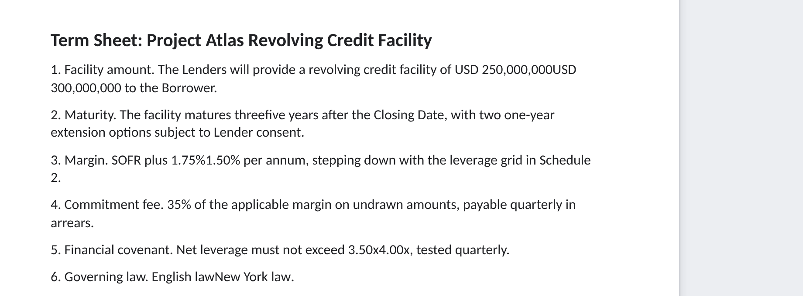
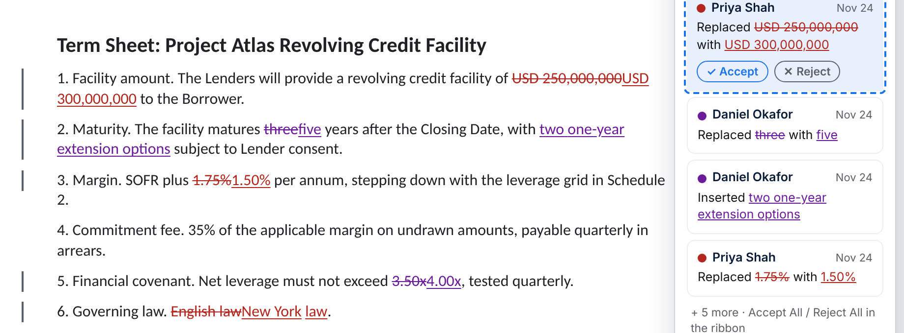
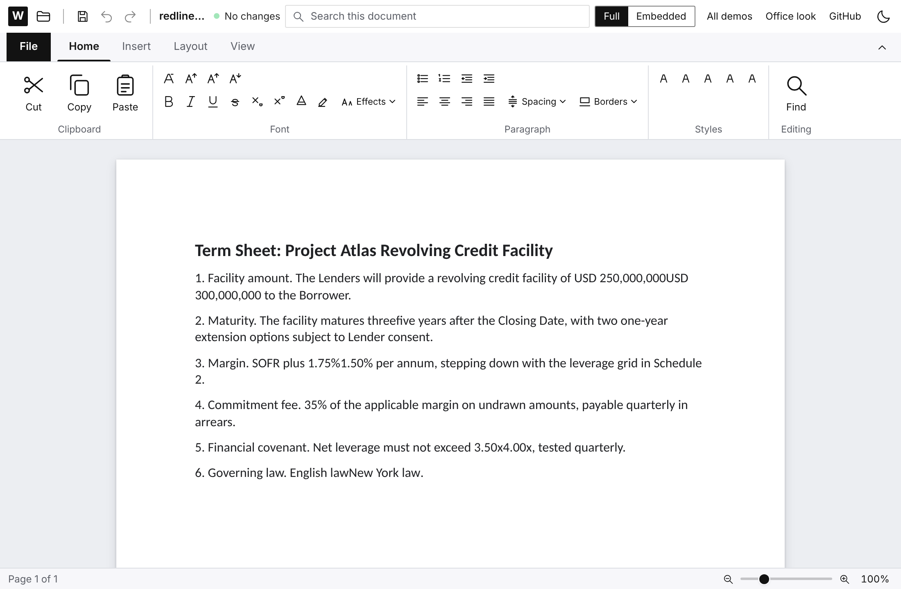
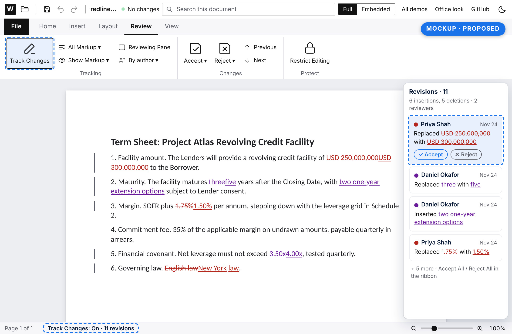

Review tab with Track Changes: see redlines, then accept or reject them one by one
Approve: tap 👍 on the issue · Decline: tap 👎
Close-up of the change




Full screen


Today (a sample term sheet with 11 tracked changes by two reviewers, opened in the live demo): Nitro paints deleted and inserted text run together with no markup, so the facility reads "USD 250,000,000USD 300,000,000" and the term "threefive years". There is no Review tab, so changes cannot be seen, accepted or rejected.


Mockup: a Review tab (Tracking: Track Changes on, All Markup, Reviewing Pane; Changes: Accept, Reject, Previous, Next). Deletions are struck through and insertions underlined in each reviewer's colour, with change bars in the margin, a revisions list with Accept / Reject, and 'Track Changes: On' in the status bar.
Tap an image to open it full size.
Why
Redlined drafts are how contracts, term sheets and policies move between people, and today Nitro shows them wrongly: the old and the new text appear side by side as if both were current, which is worse than not opening the file. Word, Google Docs (Suggesting), OnlyOffice and Collabora all show markup and accept/reject. Nitro's Word engine already models w:ins / w:del and has accept and reject (ported in #82), so this is mainly painting the markup and adding the Review tab.
Definition of done
- Documents with tracked changes show insertions underlined and deletions struck through in per-author colours with change bars; No Markup and Original show the final and original text correctly (never both run together).
- A Review tab has Track Changes (toggle), All Markup / Simple Markup / No Markup / Original, Reviewing Pane, Accept and Reject (this change, all shown, all) and Previous / Next; each accept/reject is one undo step.
- With Track Changes on, typing and deleting write w:ins / w:del with the author (host-settable, e.g. a user attribute or React prop) and the date; the status bar shows Track Changes: On.
- Saved files open in Word and LibreOffice with the same revisions; accepted/rejected results match Word's; untouched revisions round-trip byte-identical.
- Playwright tests cover rendering, each view, accept/reject one and all, tracked typing and save round-trip; Home ribbon unchanged (Font and Paragraph two rows); bundle-budget and all required checks green.
Approve: tap 👍 on the issue · Decline: tap 👎